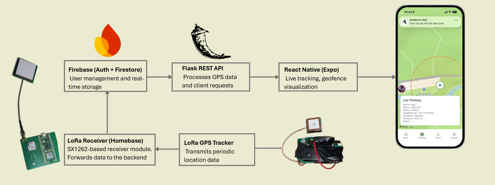
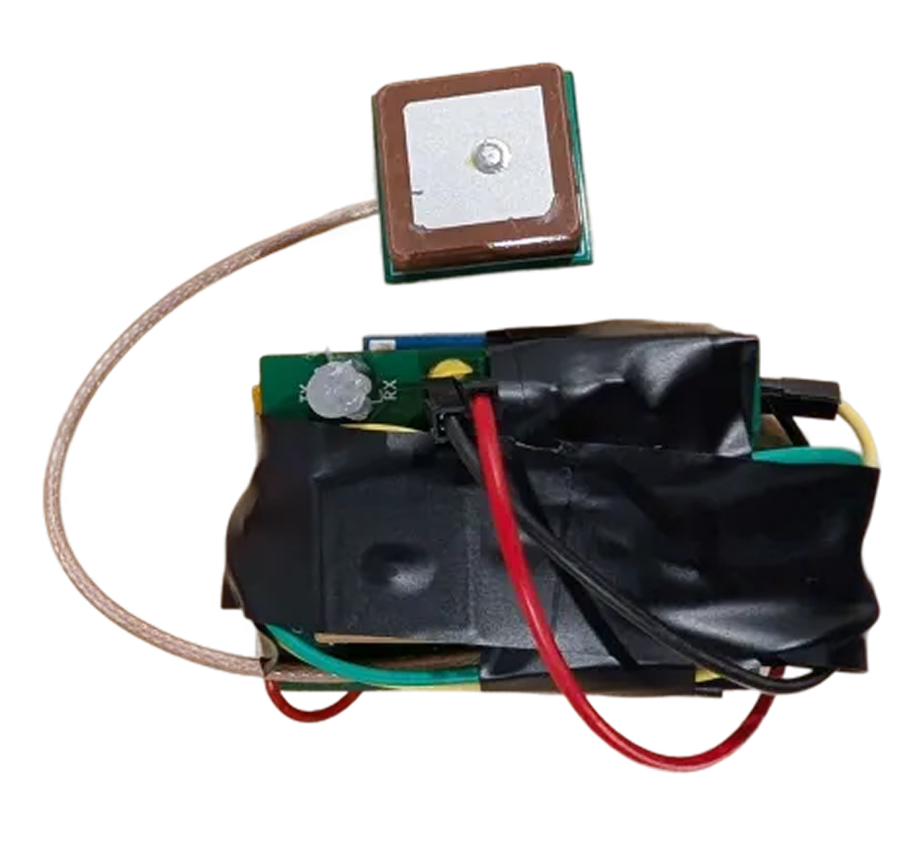
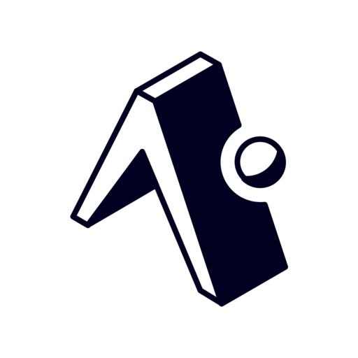
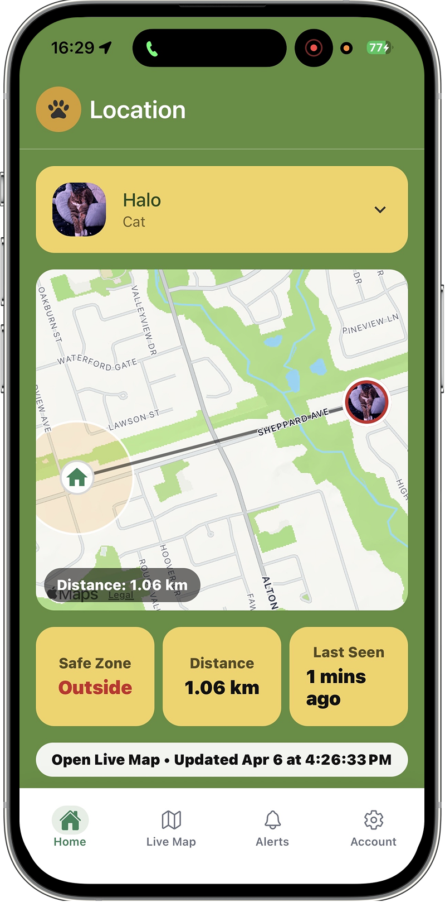
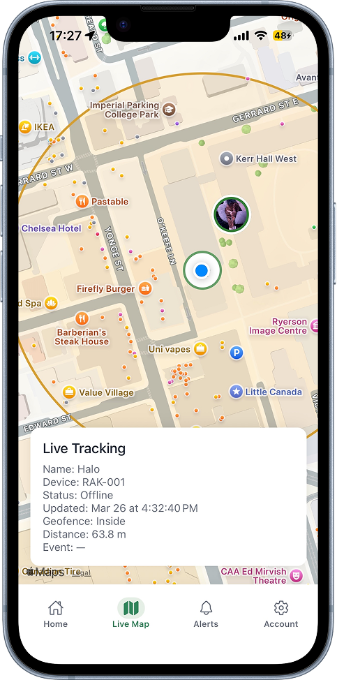
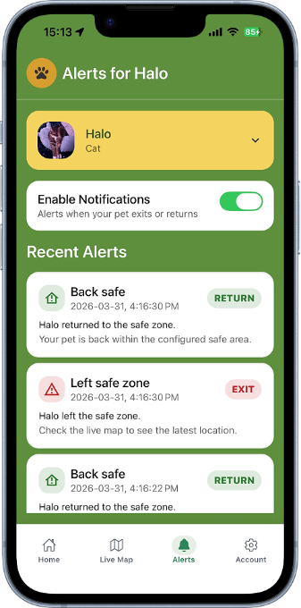
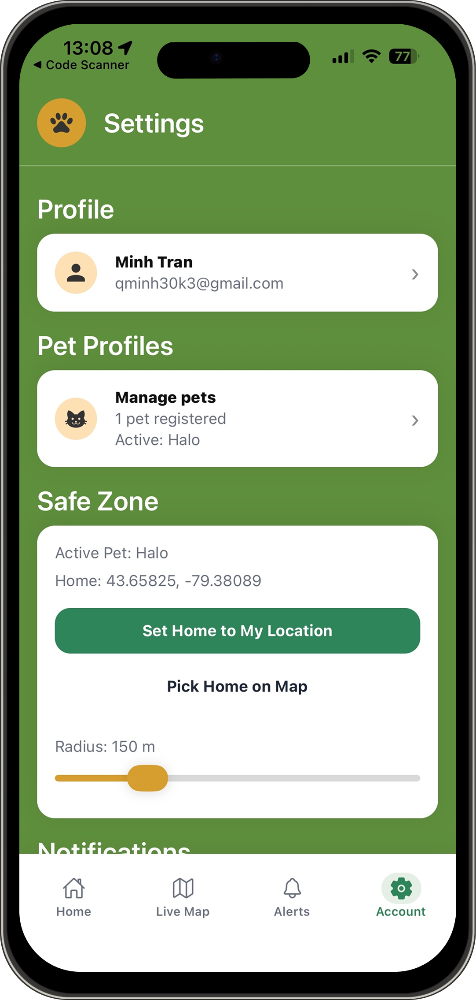

Testing and Result
Performance and validation

Suburban range test1.06 km
Forest / park range test223 m
Battery runtime~7.5 hrs
 Capstone Technical Specification
Capstone Technical Specification
Outdoor Cat Tracker combines a GPS-equipped wearable tag, a home-base relay, backend ingestion, and a cross-platform mobile application. The system is designed around one goal: giving owners clearer visibility and geofence-based awareness without putting a cellular subscription on the collar itself.
Weight
~35 g
Best Range
1.06 km
Battery
~7.5 hrs
BOM
See Report

System Flow
The system is built as a simple chain: the collar gathers location data, LoRa carries it back home over a low-power long-range link, the home base forwards it to the backend, and the app turns that data into something an owner can understand quickly.

The collar unit reads GPS coordinates, packages the data, and keeps the electronics small enough to stay wearable on the cat.
LoRa was chosen because it reaches farther than short-range consumer trackers while staying lightweight and low power for a prototype collar.
The home receiver listens for packets near the house, then forwards valid pings through Wi-Fi so the rest of the system can process them.
The app shows the latest position, safe-zone state, and alert history in a format that feels useful to owners rather than raw telemetry.
Approach to the project
This project focuses on localized outdoor safety rather than nationwide cellular coverage. Its strength is a home-centered long-range model that gives owners visibility around the home and nearby area without putting a subscription-powered modem on the collar.
Hardware

The full report contains the detailed bill of materials. In summary, the tracker bill of materials is approximately $30.61 CAD and the home base bill of materials is approximately $37.22 CAD.
Software
React Native was used to build one mobile codebase across iOS and Android.

Expo accelerated development, testing, and packaging during the capstone build.
Firebase supported authentication and cloud-backed application data management.
Flask was used to receive tracker pings and serve device-specific data to the app.




Testing and Result
Interactive Demo
Galleries
This gallery keeps only the screens that add something new beyond the main software figure above.